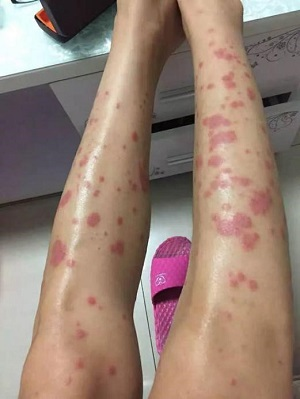
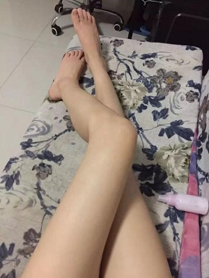
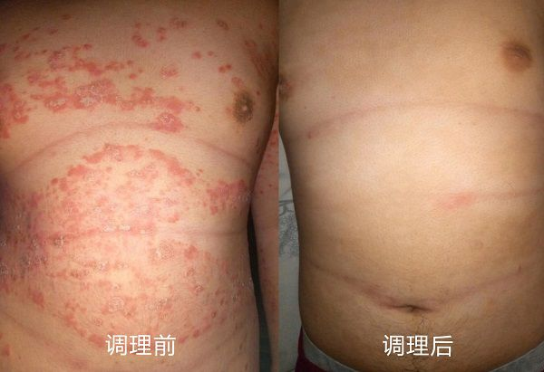
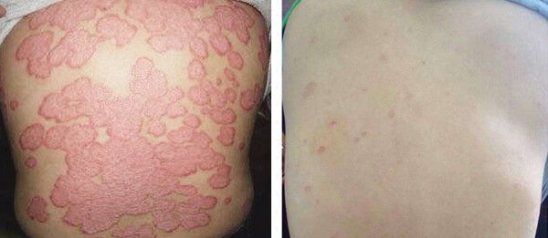
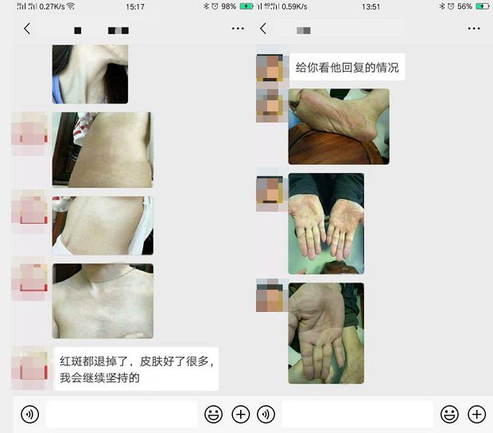
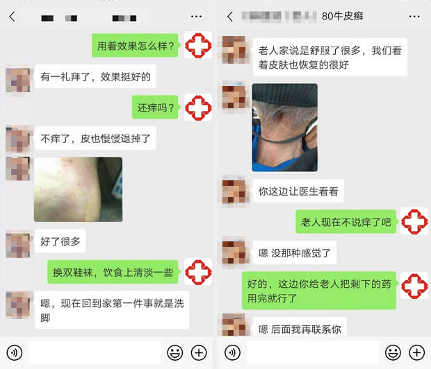
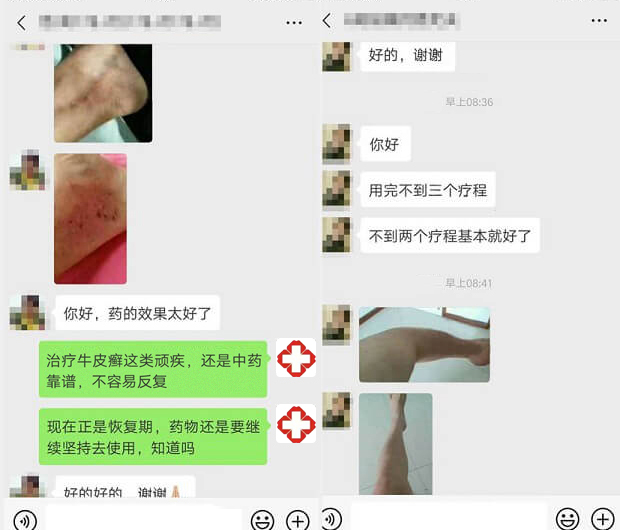
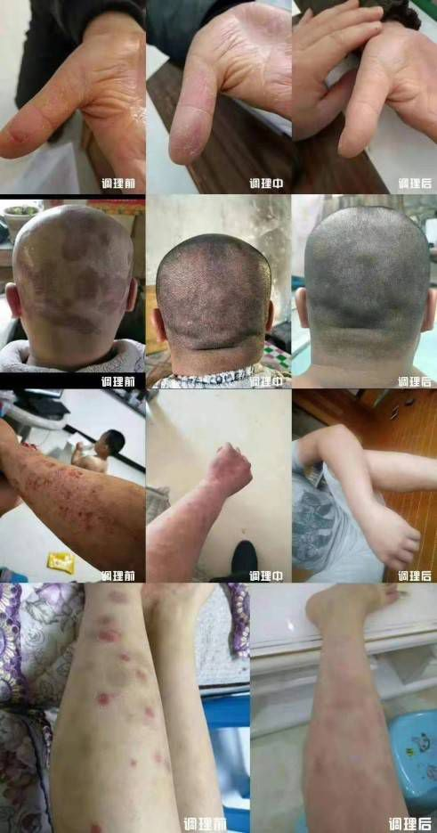

“聂主任,我真是后悔没有早点让你治疗,白花了这么多钱,身体也差点废了,是您救了我!”一位被牛皮癣折磨了近20年的大姐说。
“聂叔叔,我喜欢这样叫您,您在治疗时对我关怀备至,好像自己的孩子一样......”一位23岁的小伙说。
“聂大夫,真不知道该怎么感谢您了,您让我的女儿不再嫌弃我。”一位40多岁的大叔说。
“聂主任,我也开始对中医感兴趣了,我在您身上看到了教授美好的医德!”一位即将高考的学生说。
“聂主任,治好了后还可以找你咨询吧,你不要嫌我烦。”一位恢复效果非常好的患者说到。
“我们全家都替我感到高兴,说我很幸运,遇到了一个好教授。”一位治疗康复的新手妈妈说。
“聂大夫,您每天为这么多患者看病,也一定要注意身体呀!”一位60多岁的大娘说到。
......
这位被众多患者如此称赞的教授就是聂主任,在我国皮肤病领域绝对是不可多得的殿堂级人物。
牛皮癣免费在线咨询平台解答
绝境多得聂主任
祛癣无痕不是梦
冯女士:我今年27岁,贵阳人,在纺织厂上班,患【牛皮癣】6年多,前胸后背都有,皮肤干燥、脱屑、瘙痒,用过5年西药,一停药就复发,一次比一次狠,27岁还没婆家。使用聂主任的方子两个周期,鳞屑全掉光,皮肤完好如初,无疤无印,白里透红,至今未复发,交了男友,准备年内完婚。
 
金先生:我今年46岁,天津人,在外企做财务经理,患【寻常型牛皮癣】8年,经多家医院治疗未果,经常四肢霉烂,奇痒。使用聂主任的方子,瘙痒立即消失,两个周期,患处如常,无疤无痕。
付先生:今年48岁,患牛皮癣有七八年了,整个背部几乎看不到好的皮肤,奇痒难耐,白天工作就没法安心的待在座位上,被领导批评了多次,更难受的是到了晚上,折磨的付先生难以入眠,翻来覆去,有时候拿头在床上撞,长此以往,陷入恶性循环,身心受到多重伤害;经纯中药的几个疗法治疗后:
让全世界认识中国医学的神奇——治癣奇人聂主任
聂红伟主任自正式从事临床医疗工作,至今已有20余年了。在聂主任的医学生涯中,始终坚持一件事,就是致力于中医药的临床治疗与科研教学的医学事业中,尤其擅长皮肤性病中牛皮癣顽疾颇有建树,真正的大医精诚!

↑↑↑这张图是聂红伟主任参加医学论坛合照
"言不可治者,未得其术也!"聂主任结合中医诊断及中药药理,在牛皮癣 临床诊治过程中,探索出整套临床康复方案,可精准定位到每位患者的具体病情,使 得这三类"难治愈、易复发"疑难病种,得到很好的临床康复,并大大降低复发几率 。
据单门诊统计,每年经聂主任亲自诊治达到临床治愈的案例就达近几千例,同时参与皮肤病医疗团队下乡会诊,远程医疗诊治的患者更是不计其数。
聂主任治癣,治一个好一个!
  在医学研究上,聂主任始终在不断创新,哪怕他总结出的牛皮癣诊疗体系已经成功达到临床治愈标准,哪怕他的精湛医术已经被同行们视为标杆,但他仍然不满足,他总说:让病人有病进来,花少的钱治好病出去,这才是我们根本的职责。因此,再治疗中,他精益求精,力求完美,不仅考虑如果将患者的病症及时控制,还要力争为患者节省医疗费用,在同行眼中,他是名正直的主任,在患者眼里,他是无数牛皮癣患者的恩人。
治疗顽固性牛皮癣
快!准!狠!

聂主任根据患者病情,因病施治,顽固癣毒一招清除,患者皮肤治愈后,光亮如新,就像换了一层新皮。
★有牛皮癣问题的朋友,赶快加微信,说出自己的情况,聂主任团队就会给你帮助,让癣症消失,让你全面得到恢复。
昨天
我有发言权!我十多年的牛皮癣,全身被蚕豆大的灰白色鳞屑覆盖,状如松树皮,浑身奇痒无比,一抓就见血。上个月抱着试一试的心态加了聂主任微信,结果当天瘙痒明显减轻,半个月皮损鳞屑减少,皮疹消退,现在虽然没有完全康复,但再坚持两三月肯定能好!
回复
昨天
哈哈,比我想象恢复的速度还快!
回复
昨天
刚开始是头上有屑,没注意,结果扩散严重了,看了3年,反复复发,没有好,期间抹药抹的皮肤都起水泡了,而且蛋蛋上面摸一点就起水泡了,走路什么的都不好办,那种感觉你们可懂?前阵子上网,无意加了加了聂主任调理了3个疗程,效果真的很好,至今身上没有留下任何印记。
回复
昨天
哈哈,我也是主任的忠实粉丝,现在主任一直在指导我用药,还有平时叮嘱我不要染发烫发,不能吃辣的,甜的,油的,比如奶油之内的最好不要吃,每天运动,不知道为什么,真的就好了很多很多了,现在胳膊、大腿、脚腕上的癣斑都没有了,不过平常还是要注意。
回复
昨天
记得平时也要养成良好的生活习惯,才能杜绝后患。
回复
昨天
他是怎么给你们调理的?我老公也有牛皮癣问题,年轻时候就有了,试了好多办法都不顶用,你们说的这个名医真能治好吗?
回复
昨天
我是红皮型牛皮癣,看了之后默默的加了聂主任的微信,真不容易,开心!希望也能早点康复
回复
昨天
去年开始,我上臂、大腿长硬疹子,活像鸡皮疙瘩,一到夏天更痛苦,捂着跟怪物一样,去了少说也有七八家大医院了,没一点好转,没有一点改善,跳楼的心都有。
回复
昨天
想开点,千万别耽搁了,及时就医。
回复
昨天
聂主任我接触过,他治牛皮癣是一绝!本人7年顽固性牛皮癣,身上有大片皮损,由于面积大,试过好多办法不见效,找聂主任调理了小半年了,现在基本恢复正常,谁要不信,给你发照片!对了,主任微信号就是这个: ,不过好像他比较忙,每天亲自开方配方,我有时跟他聊,回复都很慢,大家加上耐心等待就行,主任人很好,看到一定会回的。
回复
昨天
楼主,你说的这是聂主任吧?医学的的代表呀!50多年的临床经验,没有他看不好的皮肤病,能不厉害吗?能找他给你看可算你走运了,我们这的人想找他看还看不上呢
回复
 张涛涛
张涛涛昨天
楼主握个手!我也是在微信上加了聂主任!接近10年的牛皮癣啊,调理了三个月,现在停药一年了,一次也没犯过!呵呵,希望大家也能早日康复!
回复
 张家祥
张家祥昨天
我被牛皮癣折磨了差不多9年了,一直寻医问药,就是治不好。后来我表哥推荐我加了聂主任微信号,现在已经基本上全好了。
回复
 王莹莹
王莹莹昨天
不是吧,楼主找的也是聂主任?没想到他的知名度这么大了,呵呵。之前我男朋友也是严重的皮癣,痒起来就看他不停的抓,经常抓的血肉模糊,想跟他亲热一下都提心吊胆的怕传染,后来也是通过聂主任的微信指导,才慢慢好转,鳞屑全掉光,跟他在一起再也不担心了。
回复
 孙建友
孙建友昨天
聂主任的微信号是 ,水平很高的名医,没想到开微信了,好新潮啊,这联系起来就方便多了!
回复
 羽蓝辰
羽蓝辰昨天
我顽固性牛皮癣快14年了,去过至少10家医院都没用,聂主任的方子我刚用上,用药三天就不痒了,听楼主这么说我更有信心了!主任人挺好的,虽然回复慢了点(毕竟问他的人多,可以理解),但每一个问题都会帮我仔细分析,一点架子都没有,很感动!
回复
 张剑飞
张剑飞昨天
十几年了,一直反反复复的,现在只剩印子了,为聂主任点个赞!
回复
昨天
我接受过聂主任的调理指导,比较有资格说这个话题,他的方子效果没得说(我之前寻常型的牛皮癣有七八年,现在已经完全好了),但是一定要注意一点,那就是必须按他的指导来!调理期间不能随心所欲,这样才能调出好结果。如果做不到就不要去加,免得浪费他的时间和精力!
回复